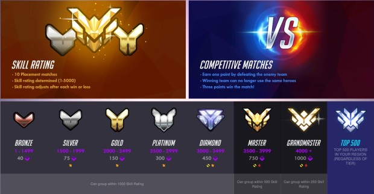
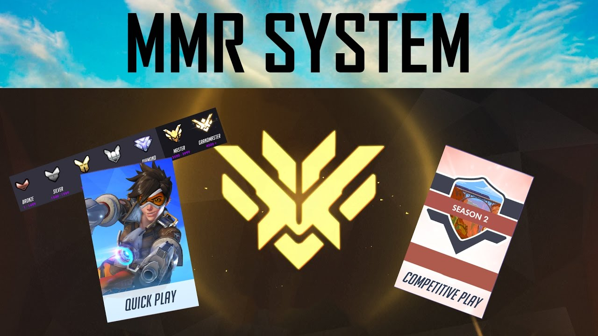
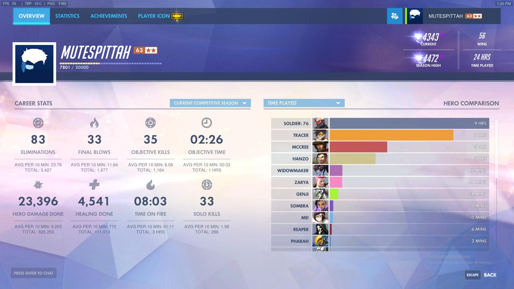
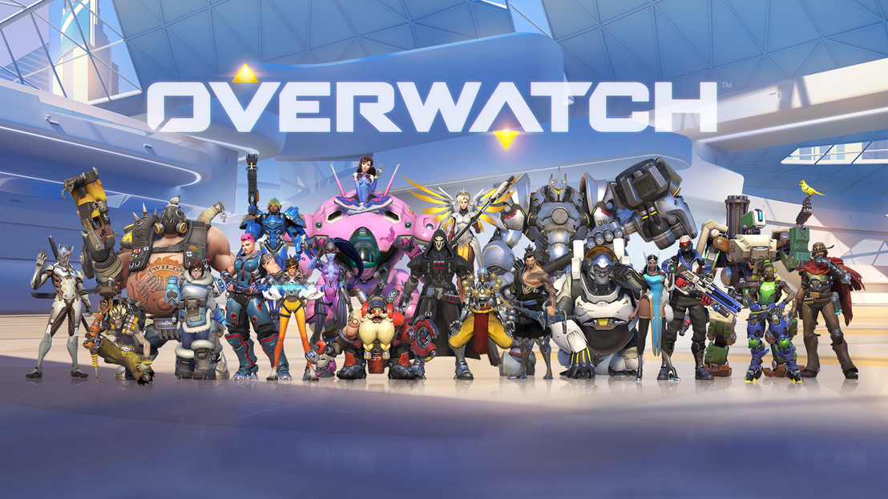

Data Provenance in Overwatch
Building a Competitive Mainstream Title
Matchmaking System
Blizzard's main design goal with Overwatch was to develop a highly competitive video game that would compete with Esport's top industry behemoths, League of Legends, Dota 2, and Counter-Strike: Global Offensive. Their first steps towards accomplishing this goal was by introducing a very in-depth matchmaking system that would try uphold the competitive integrity of the ranked ladder expectations placed upon the game.
The matchmaking system displayed towards the players is a relatively simple system. At any point in time you can be placed between a number from 1 to 5000. First, you will be tasked to play ten initial games. After these first ten games, the game itself will place you into a certain "tier" and give you an absolute value of a number that represents your "skill". This is called your "SR" also known as your Skill Rating. Once you are placed into your specific skill rating you will never play any number of ranked games to continue that process of losing and gaining skill rating. While deceptively simple and represented in a similar format to the known competitive Chess sytstem called the ELO system, there are actually alot of variables and hidden values that determine where you get placed, how much SR you gain per win, and how much SR you lose per win.
Hidden Matchmaking Rating

Hidden Matchmaking Rating, also known as Hidden MMR, is a value that an ordinary player cannot see and is only available and visible towards Blizzard employees. Overwatch is a heavily influenced team-based game which means calculating certain values such as Match Making Rating (in this case Skill Rating) is a very difficult task in terms of upholding the competitive integrity of your rating. Because Overwatch is a complex and dynamic game it is almost impossible to please every single player that takes the competitive path. Blizzard's response to this problem was to create a hidden Matchmaking Rating that would essentially be repesented as your "true" player rating. The problem with the ordinary matchmaking rating is the fact that creating a hard value of points lost or points gained is disengenous and doesn't properly represent who deserves to lose points and who deserves to win points. For example, if you were a severely impactful member of your team and even if you were the most impactful member within the entire game (there can be 12 people in a single game) it is still possible for you to lose SR. Yet, for that specific player who played his or her heart out and impacted the game at a higher level than anyone else he or she can feel robbed of a true experience. This is where Hidden MMR comes in. Hidden MMR acts as a second set of rating where it helps determine how much you gain or lose within a specific game.
The Data Provenance in Overwatch's Hidden MMR
Calculating Hidden MMR means recording and storing an individuals performance through data statistics and eventually evaluating those statistics to provide a absolute value of SR placement, SR lost, and SR gained as accuratley as possible. So what is Data Provenance in Overwatch? Data provenance is defined as "the history and origin of data" as well as "a series of transformations applied to an input data". In Overwatch's matchmaking system, Data Provenance provides a very significant role of noticing the individual patterns that a player essentially exhibits in order to place that player into his or her proper skill rating tier. For example, if a player exhibits exceptional play in the tier of Diamond for the first week of the season, but then begins to show a pattern of deteriorating skill through multiple losses, his or her Hidden MMR will slowly begin to decrease. To translate this into what the player itself will see is that player will notice that the amount of SR she gains will be lower, and the amount of SR she loses will be increased because his or her Hidden MMR is trying to tell us that that specific player deserves to be at a lower tier and will push that player towards that tier until he or she starts showing patterns of improvement. Data Provenance exists in Overwatch to provide Blizzard as well as the player these calculated and as accurate as possible displays of player growth and decline in a competitive environment.

Who Needs to Use Provenance In Overwatch?
Data Provenance in Overwatch is mainly used by Blizzard and their Overwatch Development Team. They use data provenance in order to create a structural matchmaking system that fairly and as accurately as possible represents their individual and unique playeres properly in terms of skill and ranking. It's very important for a competitive game within the Esports Industry to uphold the competitive integrity of its matchmaking system because every individual who wishes to pursue that competitive path wants and should require for their skill to be as accurately displayed as possible. That is what competition is and it should be represented by the best.
In What Ways does Blizzard support Provenance?
For Overwatch, Blizzard met the challenge and took the task of designing their own in-game engine. Not only that, but Blizzard themselves is a video game corporation known for in-sourcing most of their work and projects, thus, they keep their methods very secretive and hard for the public to actually see. However, it's safe to assume that Blizzard has a very in-depth method of calculating, recording, and determining patterns of their millions of individual players by creating complex algorithims. While their tools aren't open to public we can safely assume it is very similar to what many video game companies would use to capture the statistics of their users. Blizzard has stated that a section of their company, Blizzard Entertainment International, a division of Activision Blizzard International B.V., is the data controller for the processing of your personal data. The purpose of this sector branch within blizzard is to ". . . collect data related to: your game play and in-game activity, the services that you use and how you use them, and your devices and activities when you install or access our services." So, to some degree we know that Blizzard does practice the use of information collection as well as Data Provenance to some degree.
References:
https://www.blizzard.com/en-gb/legal/8c41e7e6-0b61-42c4-a674-c91d8e8d68d3/blizzard-entertainment-privacy-policy
https://www.washingtonpost.com/news/sports/wp/2018/07/28/overwatch-league-looks-to-future-of-esports-as-london-spitfire-makes-history/?noredirect=on&utm_term=.f9765a28c855